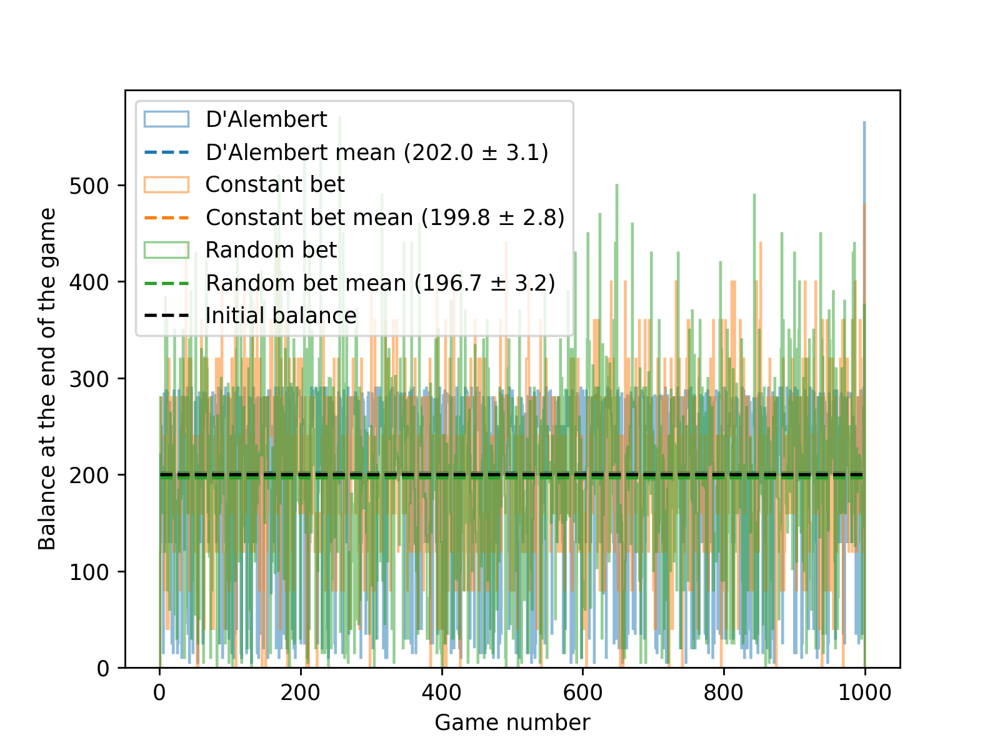

D'Alembert Strategy¤
The d'Alembert strategy is a betting system often used in gambling. It is named after the French mathematician Jean le Rond d'Alembert. The strategy is based on the idea of balancing wins and losses, and it is considered a more conservative approach compared to other betting systems like the Martingale.
How the d'Alembert Strategy Works¤
-
Initial Bet: You start with a base bet, which is the amount you choose to wager initially.
-
Increasing Bets: If you lose a bet, you increase your next bet by one unit. For example, if your base bet is $10 and you lose, your next bet would be $20.
-
Decreasing Bets: If you win a bet, you decrease your next bet by one unit. So, if you win after betting $20, your next bet would return to $10.
-
Goal: The goal of the d'Alembert strategy is to achieve a balance between wins and losses over time, with the idea that the number of wins and losses will eventually even out.
{kind=link}
Theory¤
We suppose there are two possible outcomes of the game, red and black, with the same probability $$ P(R) = 1/2 = P(B). $$
Intuition would suggest
because the number of red and black outcomes should balance over time. This is the core of the D'Alembert strategy.
However, this is wrong, as can be illustrated by the simulations. Each round is independent of the previous one, therefore by definition of the conditional probability
Code¤
The code bellow compares the D'Alembert strategy with two other strategies:
- Always bet the same: the bet is the same in every run, regardless the output of the previous round.
- Random bet: the decision of whether the bet should be increased or decreased before each round is randomized.
The strategies are compared by multiple simulated games with a fixed number of runs.
Note
The implementation of the D'Alembert strategy is higlighted in the code bellow.
import random
import matplotlib.pyplot as plt
import numpy as np
import pathlib
def main():
# Parameters
initial_balance = 200 # Initial balance
base_bet = 20 # Initiabl bet
bet_change = 5 # Change of the bet
rounds = 20 # Maximum number of rounds
number_of_simulations = 1000 # Nummber of simulations
# Results
final_balance_DAlembert = []
final_balance_sameBet = []
final_balance_randomBet = []
for sim in range(number_of_simulations):
# Start of the simulation
final_balance_DAlembert += [d_alembert_strategy(initial_balance, base_bet, rounds, bet_change)]
final_balance_sameBet += [always_bet_the_same(initial_balance, base_bet, rounds)]
final_balance_randomBet += [random_bet_change(initial_balance, base_bet, rounds, bet_change)]
plot(final_balance_DAlembert, final_balance_sameBet, final_balance_randomBet, initial_balance)
def plot(final_balance_DAlembert, final_balance_sameBet, final_balance_randomBet, initial_balance):
fig, ax = plt.subplots()
x = np.arange(len(final_balance_DAlembert))+1
ax.hist(x, bins=x, weights=final_balance_DAlembert, align="mid", histtype="step", facecolor="none", alpha=.5, label="D'Alembert")
m = np.mean(final_balance_DAlembert)
s = np.std(final_balance_DAlembert)/np.sqrt(len(final_balance_DAlembert))
ax.plot([x[0], x[-1]], [m,m], linestyle="--", c="C0", label=f"D'Alembert mean ({m:.1f} $\pm$ {s:.1f})")
ax.hist(x, bins=x, weights=final_balance_sameBet, align="mid", histtype="step", facecolor="none", alpha=.5, label="Constant bet")
m = np.mean(final_balance_sameBet)
s = np.std(final_balance_sameBet)/np.sqrt(len(final_balance_sameBet))
ax.plot([x[0], x[-1]], [m,m], linestyle="--", c="C1", label=f"Constant bet mean ({m:.1f} $\pm$ {s:.1f})")
ax.hist(x, bins=x, weights=final_balance_randomBet, align="mid", histtype="step", facecolor="none", alpha=.5, label="Random bet")
m = np.mean(final_balance_randomBet)
s = np.std(final_balance_randomBet)/np.sqrt(len(final_balance_randomBet))
ax.plot([x[0], x[-1]], [m,m], linestyle="--", c="C2", label=f"Random bet mean ({m:.1f} $\pm$ {s:.1f})")
ax.plot([x[0], x[-1]], [initial_balance, initial_balance], linestyle="--", c="black", label="Initial balance")
plt.ylabel("Balance at the end of the game")
plt.xlabel("Game number")
plt.legend()
fName = pathlib.Path("DAlembert.png")
fig.savefig(fName, dpi=250)
def d_alembert_strategy(initial_balance, base_bet, rounds, bet_change):
balance = initial_balance
current_bet = base_bet
for r in range(rounds):
if balance < current_bet:
break
# Result of the simulation (0 = loss, 1 = win)
result = random.choice([0, 1]) # 0 = loss, 1 = win
if result == 1: # Win
balance += current_bet
current_bet = max(1, current_bet - bet_change) # Decrease of the bet
else: # Loss
balance -= current_bet
current_bet += bet_change # Increase of the bet
return balance
def always_bet_the_same(initial_balance, base_bet, rounds):
balance = initial_balance
current_bet = base_bet
for r in range(rounds):
if balance < current_bet:
break
# Result of the simulation (0 = loss, 1 = win)
result = random.choice([0, 1]) # 0 = loss, 1 = win
if result == 1: # Win
balance += current_bet
else: # Loss
balance -= current_bet
return balance
def random_bet_change(initial_balance, base_bet, rounds, bet_change):
balance = initial_balance
current_bet = base_bet
for r in range(rounds):
if balance < current_bet:
break
# Result of the simulation (0 = loss, 1 = win)
result = random.choice([0, 1]) # 0 = loss, 1 = win
if result == 1: # Win
balance += current_bet
else: # Loss
balance -= current_bet
current_bet = random.choice([current_bet + bet_change, max(1, current_bet-bet_change)])
return balance
if __name__ == "__main__":
main()
Output
The output is a plot illustrating the comparison of the three strategies and the average end of the game balance. 
{kind=link}
Notice that all three results are the same within their errors, meaning that the D'Alembert strategy in this form does not lead to significantly better results. This is because of the independance of the outputs of each of the rounds, as discussed at the end of the theory section.
Advanced
Try to rewrite the code so that the for loop is avoided and the problem is solved via the vectorized approach.
The code bellow is the simulation of the D'Alembert strategy.
#include <iostream>
#include <cstdlib> // For rand() and srand()
#include <ctime> // For time()
#include <TH1D.h> // ROOT histogram class
#include <TROOT.h> // ROOT main class
// Main function to simulate D'Alembert's strategy
void DAlemberts_strategy() {
// Load ROOT macros for styling
gROOT->LoadMacro("/home/mira/local/atlasstyle-00-03-05/AtlasStyle.C");
gROOT->LoadMacro("/home/mira/local/atlasstyle-00-03-05/AtlasUtils.C");
// Declare a histogram to store results
TH1D* h_total;
int super_total = 0; // Variable to accumulate total results
int number_of_games = 100; // Number of games to simulate
// Initialize histogram for total results
h_total = new TH1D("total", "total", 100, 0.5, 100.5);
h_total->SetXTitle("Number of Bets");
h_total->SetYTitle("Total Amount");
h_total->Sumw2(); // Enable error calculation for the histogram
// Loop through the number of games
for (int n = 1; n <= number_of_games; n++) {
int total = 200; // Starting capital
int bet = 10; // Initial bet amount
int min_bet = 1; // Minimum bet amount
// Simulate 100 rounds of betting
for (int i = 1; i <= 100; i++) {
// Check if the bet is valid
if (bet < min_bet || total < bet) break;
// Generate a random outcome (0 = loss, or 1 = win)
int j = rand() % 2;
// Update total and bet based on the outcome
if (j == 0) { // Loss
total -= bet; // Lose the bet
bet++; // Increase the bet for the next round
} else { // Win
total += bet; // Win the bet
bet--; // Decrease the bet for the snext round
}
}
// Accumulate the total results
super_total += total;
h_total->Fill((n - 0.5), total); // Fill histogram with the total for this game
}
// Adjust super_total by subtracting the initial capital for all games
super_total -= (number_of_games * 200);
std::cout << super_total << std::endl; // Output the final result
h_total->Draw("hist"); // Draw the histogram
}
Output
The output of the programe is a plot of the balance at the end of the game for multiple runs. It also prints in the terminal the total loss / win.
Advanced
Try to implement other strategies (random bet, constant bet,...) for comparison.